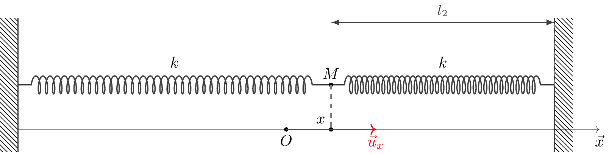
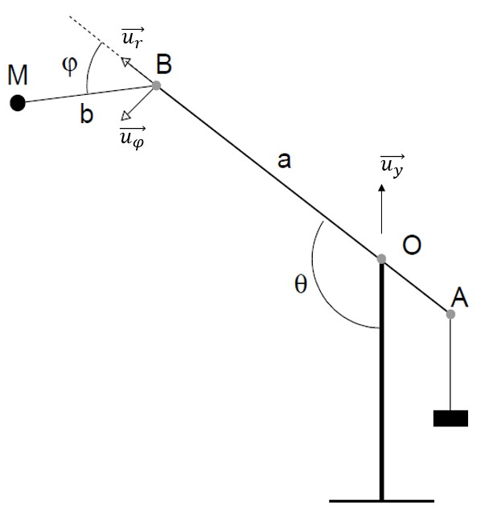

TD 4:
1 Exercice 1 - Arme à l’ancienne
L’une des armes utilisée au Moyen-âge pour envoyer des charges lourdes contre les murailles était ce que l’on appelle “un trébuchet”. Il est composé d’une poutre \(AB\) à laquelle est fixée un contrepoids en \(A\). En \(B\) est attachée une corde au bout de laquelle une poche contient le projectile \(M\).
Soit \(R(O,x,y,z)\) le repère lié au sol et \(R_B(B,x_1,y_1,z_1)\) le repère lié à la poutre. Le mouvement a lieu dans le plan \((Oxy)\). La base polaire \((\vec u_r, \vec u_\varphi)\) est liée à \(RB\). On donne \(OB = a\) et \(BM = b\).
1.1 Partie A
- Quel est le mouvement de \(R_b\) par rapport à \(R\)?.
- On suppose que la corde \(BM\) reste tendue. Donner l’expression de \(\vec{BM}\). En déduire l’expression de \(\vec v(M_{/R_B})\).
- Determiner l’expression du vecteur \(\vec{OM}\). En déduire l’expression de \(\vec{ v(M_{/R})}\).
Le projectile est est lâché lorsque \(\theta=\pi\) et \(\varphi=0\).
- Déterminer l’expression de \(\vec v(M_{/R})\), en fonction de \(a\), \(b\), \(\dot{\varphi}\), \(\dot{\theta}\).
- Montrer que la vitesse obtenue est plus grande que s’il n’y avait qu’un seul bras rigide de longueur \(a+b\).

1.2 Partie B
On étudie désormais le projectile \(M\) laché avec une vitesse horizontale \(v_0=200km/h\), depuis la hauteur totale du trébuchet \(H=16m\). On se place dans un repère orthonormé (\(\vec u_x\), \(\vec u_y\)). On considère que le projectile a une masse \(m=100kg\). Les frottements sont négligés.
A l’aide du PFD, déterminer l’équation de la trajectoire \(y(x)\).
En déduire la distance que parcourt horizontalement le projectile avant de s’écraser au sol.
2 Exercice 2 - Association de deux ressorts
On place un bloc \(M\) de masse \(m= 700g\) sur un rail horizontal et on le fixe aux extrémités de deux ressorts semblables \(R_1\) et \(R_2\) de mêmes constantes de raideur \(k= 20N/m\). La longueur initiale de chaque ressort est \(l_{01} = l_{02} = 18cm\) et à l’équilibre, ils ont même allongement \(\Delta l_1 = \Delta l_2 = 2cm\).
On considère que dans cette position, le point \(M\) et l’origine du repère \(O\) sont confondus.
On écarte le bloc de sa position d’équilibre de \(4cm\) dans le sens des \(x\) positifs, puis on le lache sans vitesse initiale, à l’instant \(t=0\). On considèrera les frottements comme négligeables.
- Déterminer les expressions des allongements de \(\Delta l_1\) et \(\Delta l_2\) pour chaque ressort en fonction de \(x\) l’abscisse de \(M\).
- Appliquer le PFD sur le système. En déduire l’équation différentielle du mouvement de \(M\).
- Résoudre l’équation différentielle du mouvement de \(M\). Comment se comporte le bloc \(M\) dans le temps?
On immerge le système dans un liquide. Sachant que la force de frottement appliquée par le liquide sur la plaque au cours du mouvement du bloc est de la forme \(\vec F_f=-\alpha \vec v\), avec \(\alpha\) une constante positive et \(\vec v\) le vecteur vitesse de M.
- Appliquer le PFD sur le système. En déduire l’équation différentielle du mouvement de \(M\).
- Résoudre l’équation différentielle du mouvement de \(M\). Comment se comporte le bloc \(M\) dans le temps?
- A partir de quel instant \(t_1\) les oscillations du système restent-t-elles dans une fourchette de \(1cm\) autour du point \(O\)?